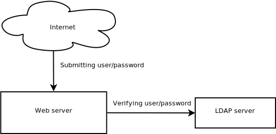
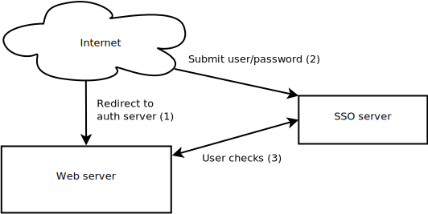
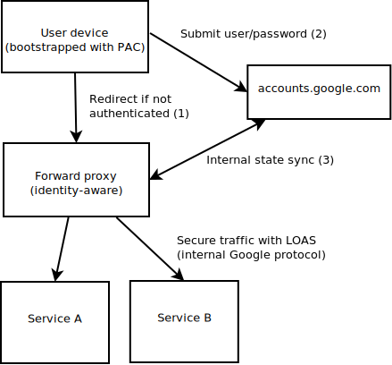
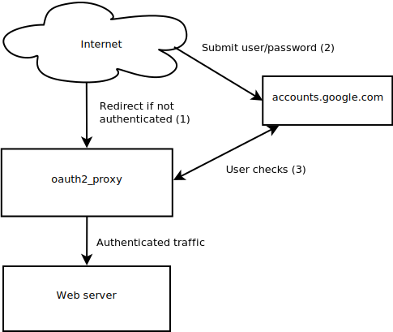
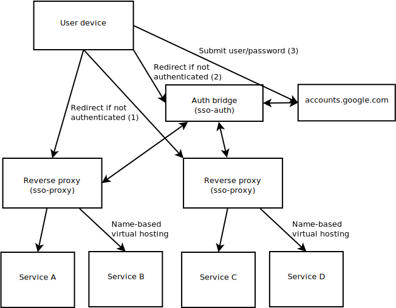

Single sign on is a very common requirement for organizations with many employees. Once you reach a certain stage and new employees are onboarded regularly, you need a smooth process for this. Similarly, employee churn becomes an ordinary event, and you have to make sure that people that do not work for the company anymore are taken out from your user database and their accesses revoked.
Before the advent of SSO (or LDAP/AD), users were created and managed on the various systems separately. Support teams would create accesses for the users multiple times, on the various systems that the user needed for work. Needless to say this was burdensome and, when users left the company, it was easy to forget removing them.
To solve this problem, companies started to centralize the list of users of the company in one database. This made it easier for IT support teams to add/remove users at the right moment. This allowed easier access management. A big step forward.

LDAP (or AD) however did not simplify the login procedure, and with the prolification of services in the enterprise environment, a user would have needed to login separately to each one to be able to do anything. This is when SSO (Single Sign On) comes in.

SSO is slightly more than a centralized user database. It moves the login responsibility from the many services you might have to a central one. If any services under SSO detect that you are not logged in, they will redirect to your SSO server, where you will enter your credentials.
SSO is a higher level abstraction than LDAP. By controlling the initial interaction with a user, many SSO tools available on the market allow you to have for free features that you would normally have to integrate yourself, such as:
- Federated identities (Social login and similar)
- 2 Factor authentication (or multiple)
- Password brute force protection
- Login audit trails
The features listed above can be present in a system without SSO, but in that case they would need to be implement for every single service.
Integrations between the protected services and the SSO system can happen through various protocols, the most used being OpenID connect, which is an extension of OAuth. OAuth is also the protocol that is normally used for social login.
SSO can be quite complex to understand. There are many acronyms and many implementations. What I labelled above “User checks” is dependent on the implementation of SSO. If your implementation uses JWT tokens, this flow will be different than an implementation that does not use them.
Because of its complexity, this design is evolving. One interesting evolution is what Google is purposing with its BeyondCorp papers. Google is dressing this a lot with device management, context, etc… which is more than plain identity verification. Essentially this is what it is:

Google has also productized this in a product called Identity Aware Proxy (IAP), which is only available for services hosted internally in the Google network. I imagine this is due to the fact that LOAS is internal only.
The biggest difference between IAP and what Google uses is the location of the proxy server. You can deploy IAP only to the Google network, therefore it is technically a reverse proxy.
Amazon offers a similar service but, internally, it is structured differently. AWS ALB (Application Load balancer) can be configured to require authentication. When it is so, it must be connected to a AWS Cognito instance. Cognito is primarily an authentication bridge, connecting systems that requires authentication to user databases.
There are other designs that use proxies. Bitly’s oauth2_proxy project, which is not a SSO design, is another one. oauth2_proxy is specifically targeting social login (oAuth) with Google. A similar design would be using Apache with mod_auth_ldap, configured to expose user info to the backend.

The design above is not offering SSO. In an enterprise environment, with many services, this is a UX nuisance. Buzzfeed has heavily modified the oauth2_proxy project to implement a SSO system, using a double oAuth mechanism. By storing the state in the sso-auth node, multiple sso-proxy instances can use that.

If you ignore the number of reverse proxies, the diagram above is similar to the diagram of Google BeyondCorp. The number of proxies is actually not relevant, as both systems support multiple proxies.
The difference is the presence of an authentication bridge. In this particular setup, it stores the login state so that multiple proxies can benefit from it. This bridge is similar in principle to a SSO server that is configured with federated identities. Keycloak, for instance, is a project that supports this.
Given the complexity of integrating SSO, I think we are going to see more designs based on HTTP proxies in the future. There are a number of open source implementations of BeyondCorp, such as Pomerium and Trascend, both on Github.